Black & Grey
Black & grey Chicano realism
The style this shop is known for, tattooed in Chicago Ridge for clients from across the southwest suburbs.
Black and grey is not a color tattoo with the color left out. It is built entirely from contrast: how dark the darks go, how smooth the gray wash stays, and how much bare skin is left doing nothing at all. Get that balance wrong and the piece can turn into a gray smudge in five years. Get it right and it stands a far better chance of still reading across a room in twenty.
Chicano tattooing layers its own vocabulary on top of that. Fine line script. Laugh now, cry later masks. Catrinas and rosaries. Clocks, roses, and portraits of family. The lettering in particular is unforgiving, because a letter has no tolerance and a wobble is permanent.
Nestor has been tattooing for 25+ years, and this is the work people drive out to Chicago Ridge for.
What this covers
- Portraits worked from your own photographs
- Fine line and Old English script
- Catrinas, masks and Day of the Dead imagery
- Religious pieces and memorial portraits
- Clocks, roses and traditional Chicano imagery
- Half and full sleeves built in stages
Black & grey Chicano realism in the gallery
61 pieces, all tattooed by Nestor Juarez.


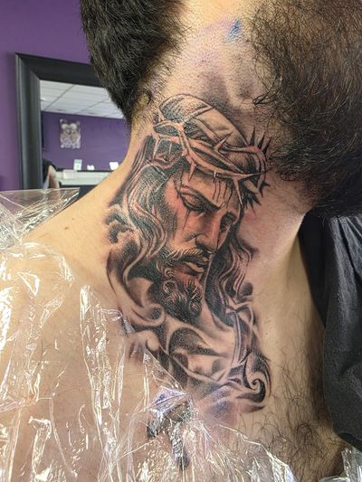
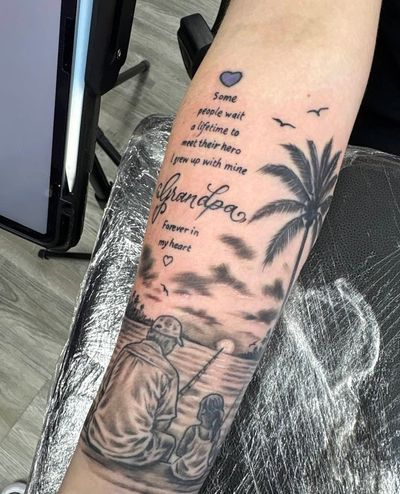


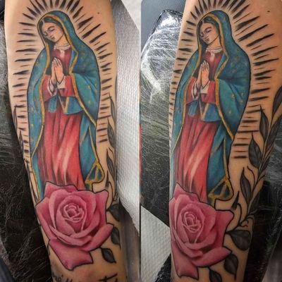
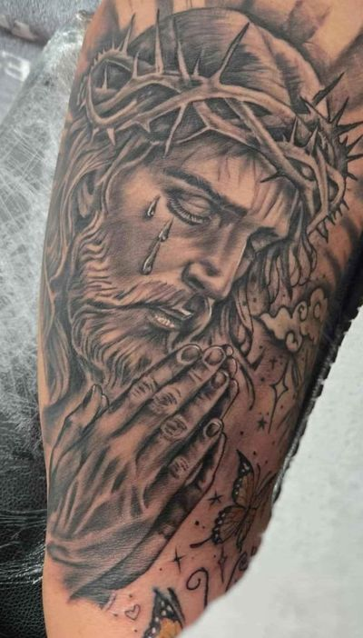
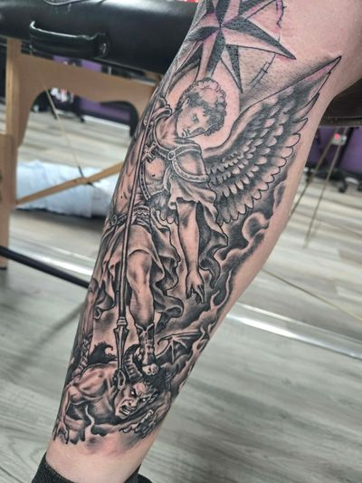


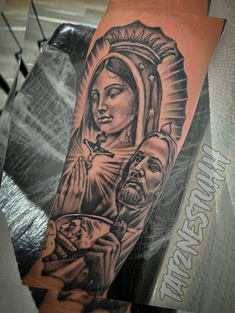

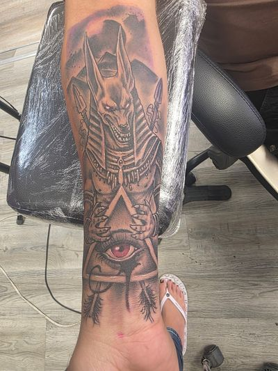
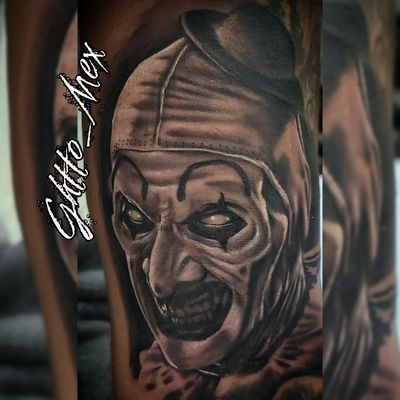


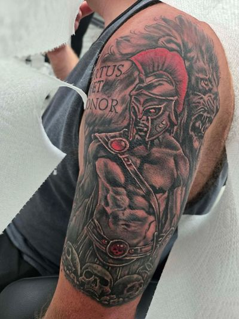


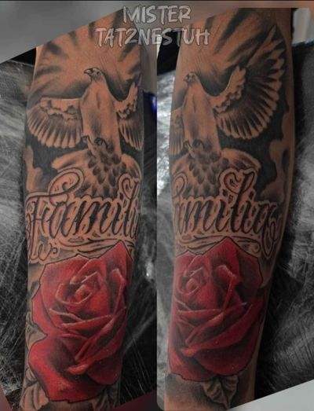

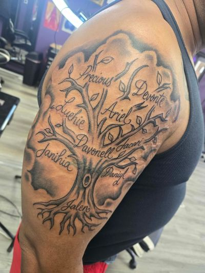


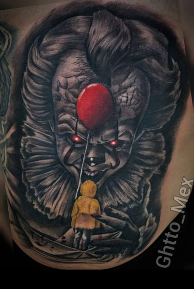
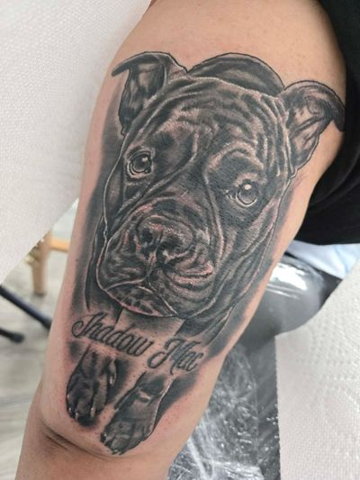


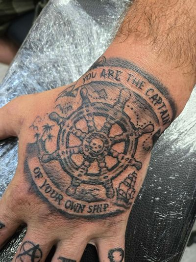
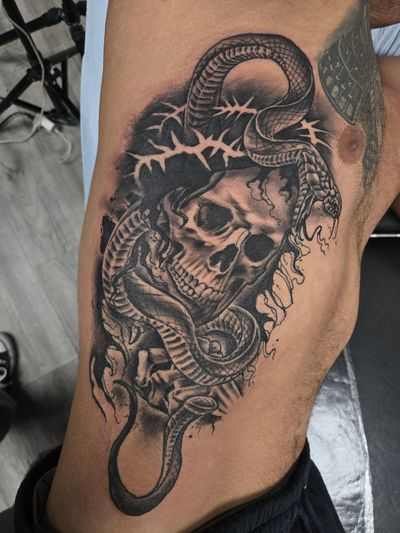


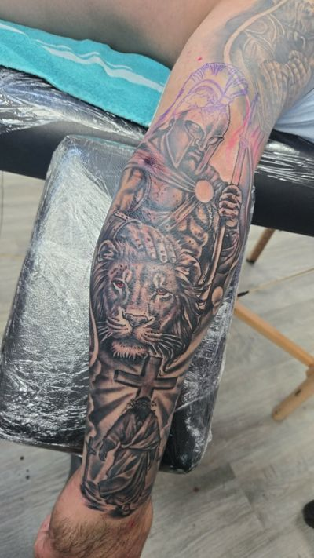


Questions
How long does a black and grey sleeve take?
You will be given a session count before anything is booked. A full sleeve is planned as one composition and then built in stages, so you always know what is coming next.
Is black and grey cheaper than color?
Not by the hour. The rate is the same. Color often runs more sittings for the same area because the blends have to be packed properly, so a color version of the same design usually costs more overall.
Do you freehand the lettering?
Rarely. Most lettering goes on from a stencil. Script that has to wrap an arm or ride a collarbone gets drawn on with a marker and checked in the mirror first, because a wobble in lettering is permanent.
Will gray wash fade faster than solid black?
Gray wash is diluted black pigment, so lighter areas read softer as the piece settles. That is why the design leaves real negative space rather than filling every inch.
Other work
Find us
Visit the shop
We are on 111th Street in Chicago Ridge, minutes from Oak Lawn, Worth, Alsip and Burbank.
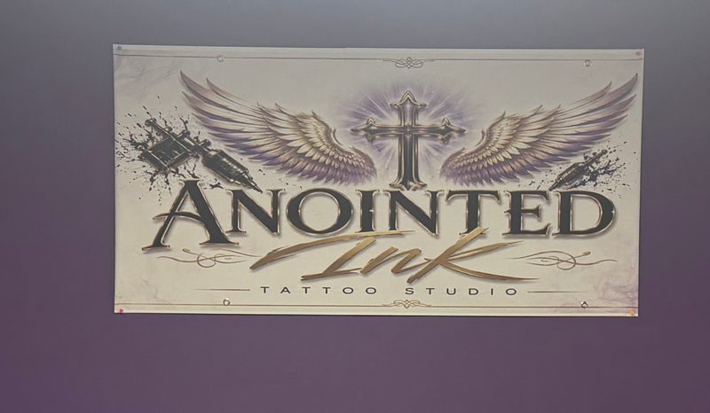
5920 W 111th St
Chicago Ridge, IL 60415
(708) 770-2754
anointed.ink29@gmail.com
Serving
Chicago Ridge, Oak Lawn, Worth, Alsip, Palos Heights, Bridgeview, Burbank, Evergreen Park, Hometown, Palos Hills, Hickory Hills, Chicago's Southwest Side.
Hours
| Monday | 12:00pm to 7:00pm |
|---|---|
| Tuesday | 12:00pm to 7:00pm |
| Wednesday | 12:00pm to 7:00pm |
| Thursday | 12:00pm to 7:00pm |
| Friday | 12:00pm to 7:00pm |
| Saturday | 12:00pm to 7:00pm |
| Sunday | Closed |
Walk-ins welcome when an artist is free. What to expect.
Plus code M6RM+72 Chicago Ridge, Illinois